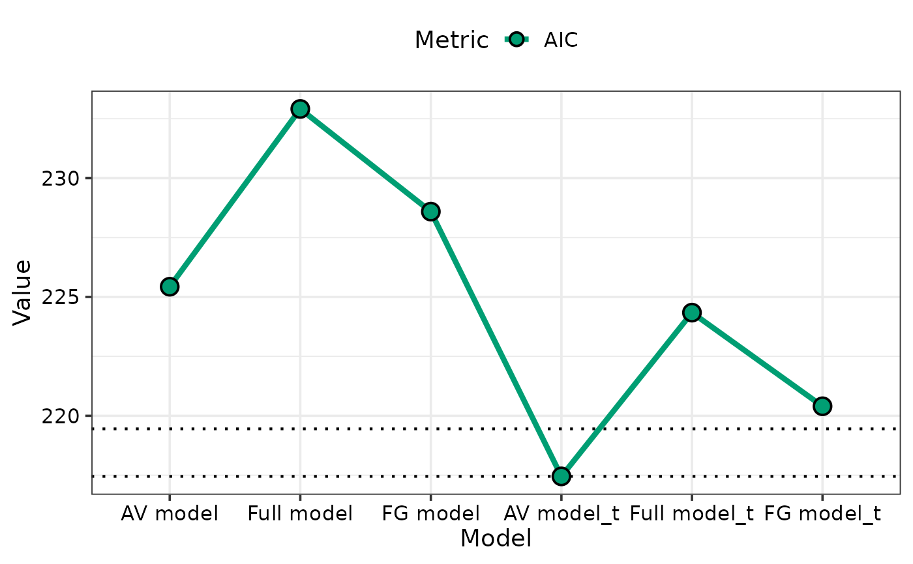
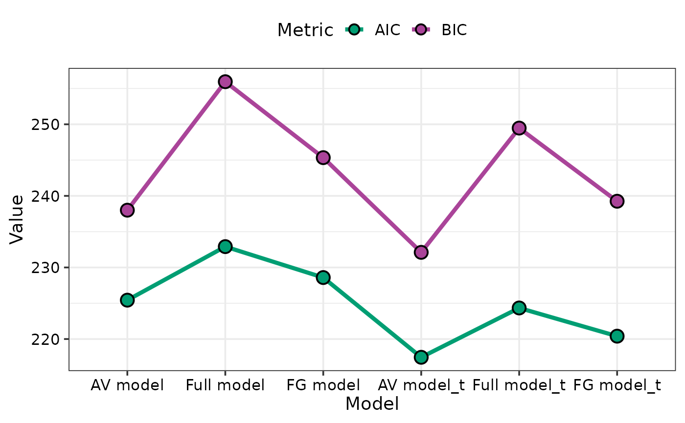
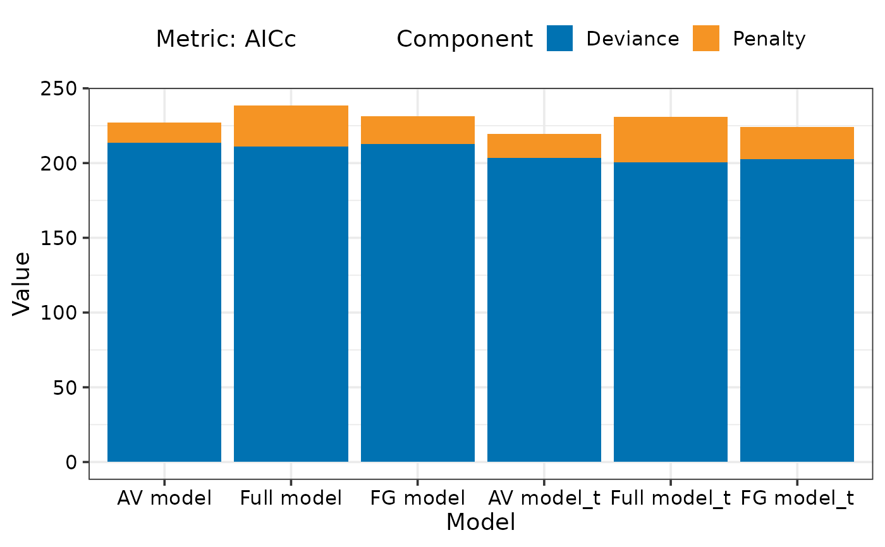
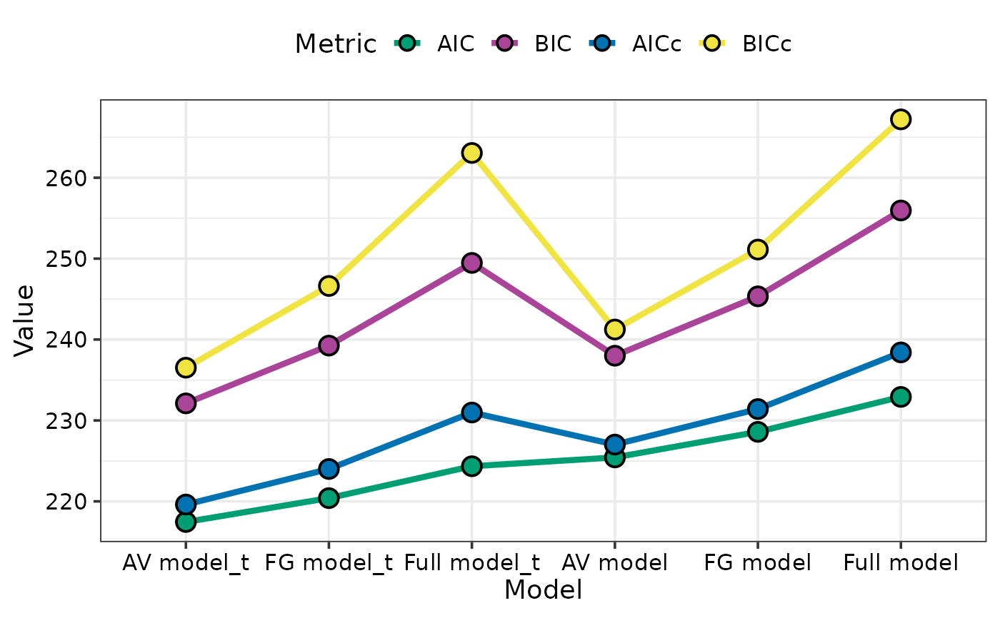
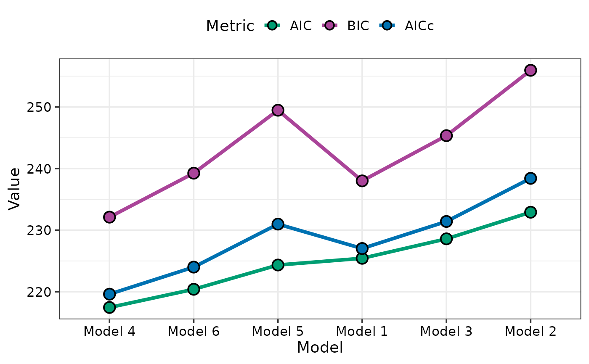
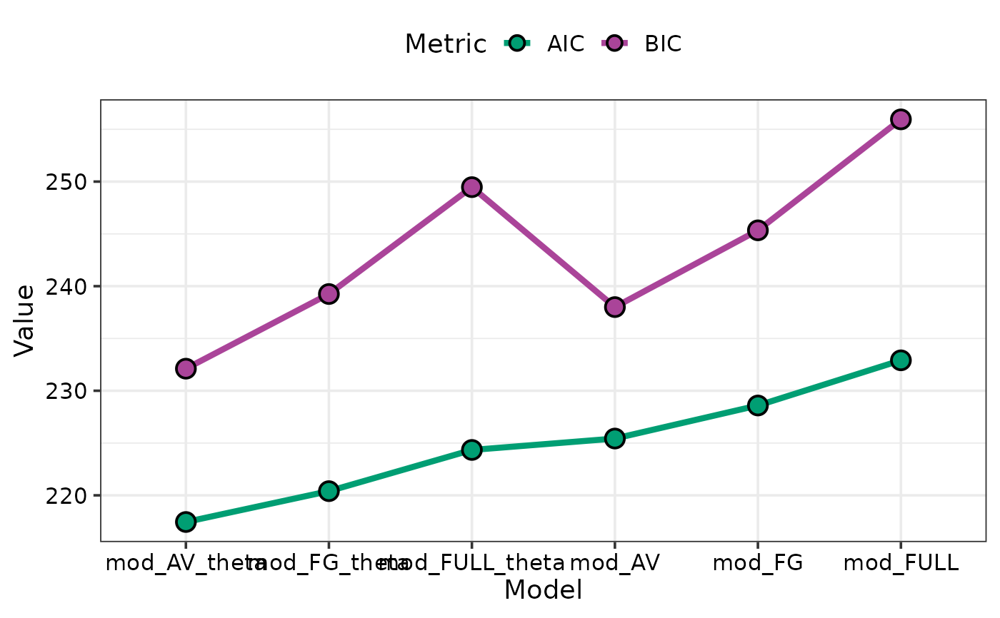
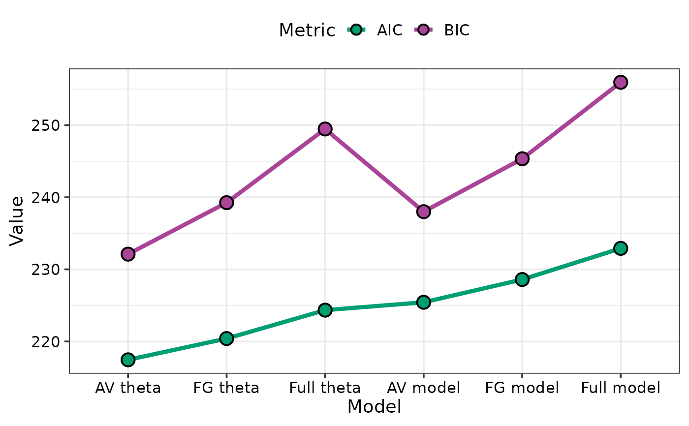

Visualising model selection
model_selection.RdThis function helps to visualise model selection by showing a visual comparison between the information criteria for different models. It is also possible to visualise a breakup of the information criteria into deviance (goodness-of-fit) and penalty terms for each model. This could aid in understanding why a parsimonious model could be preferable over a more complex model.
Arguments
- models
List of statistical regression model objects.
- metric
Metric used for comparisons between models. Takes values from c("AIC", "BIC", "AICc", "BICc", "logLik"). Can choose a single or multiple metrics for comparing the different models.
- sort
A boolean value indicating whether to sort the model from highest to lowest value of chosen metric.
- breakup
A boolean value indicating whether to breakup the metric value into deviance (defined as -2*loglikelihood) and penalty components. Will work only if a single metric out of "AIC", "AICc", "BIC", or "BICc" is chosen to plot.
- plot
A boolean variable indicating whether to create the plot or return the prepared data instead. The default `TRUE` creates the plot while `FALSE` would return the prepared data for plotting. Could be useful if user wants to modify the data first and then call the plotting
- model_names
A character string describing the names to display on X-axis for each model in order they appear in the models parameter.
Examples
library(DImodels)
## Load data
data(sim2)
## Fit different DI models
mod_AV <- DI(prop = 3:6, DImodel = "AV", data = sim2, y = "response")
#> Fitted model: Average interactions 'AV' DImodel
mod_FULL <- DI(prop = 3:6, DImodel = "FULL", data = sim2, y = "response")
#> Fitted model: Separate pairwise interactions 'FULL' DImodel
mod_FG <- DI(prop = 3:6, DImodel = "FG", FG = c("G","G","L","L"),
data = sim2, y = "response")
#> Fitted model: Functional group effects 'FG' DImodel
mod_AV_theta <- DI(prop = 3:6, DImodel = "AV", data = sim2,
y = "response", estimate_theta = TRUE)
#> Fitted model: Average interactions 'AV' DImodel
#> Theta estimate: 0.4533
mod_FULL_theta <- DI(prop = 3:6, DImodel = "FULL", data = sim2,
y = "response", estimate_theta = TRUE)
#> Fitted model: Separate pairwise interactions 'FULL' DImodel
#> Theta estimate: 0.4525
mod_FG_theta <- DI(prop = 3:6, DImodel = "FG", FG = c("G","G","L","L"),
data = sim2, y = "response", estimate_theta = TRUE)
#> Fitted model: Functional group effects 'FG' DImodel
#> Theta estimate: 0.4529
models_list <- list("AV model" = mod_AV, "Full model" = mod_FULL,
"FG model" = mod_FG, "AV model_t" = mod_AV_theta,
"Full model_t" = mod_FULL_theta,
"FG model_t" = mod_FG_theta)
## Specific metric
model_selection(models = models_list,
metric = c("AIC"))

## Multiple metrics can be plotted together as well
model_selection(models = models_list,
metric = c("AIC", "BIC"))

## If single metric is specified then breakup of metric
## between goodness of fit and penalty can also be visualised
model_selection(models = models_list,
metric = c("AICc"),
breakup = TRUE)

## Sort models
model_selection(models = models_list,
metric = c("AICc"),
breakup = TRUE, sort = TRUE)
## If multiple metrics are specified then sorting
## will be done on first metric specified in list (AIC in this case)
model_selection(models = models_list,
metric = c("AIC", "BIC", "AICc", "BICc"), sort = TRUE)

## If the list specified in models is not named then
## By default the labels on the X-axis for the models will be
## created by assigning a unique ID to each model sequentially
## in the order they appear in the models object
names(models_list) <- NULL
model_selection(models = models_list,
metric = c("AIC", "BIC", "AICc"), sort = TRUE)
#> → The list of models specified in `models` is not named.
#> → They are given numeric identifiers in the order they appear in the `models`
#> parameter.
#> → If this is not desirable consider providing names for the models in the
#> `model_names` parameter.

## When possible the variables names of objects containing the
## individual models would be used as axis labels
model_selection(models = list(mod_AV, mod_FULL, mod_FG,
mod_AV_theta, mod_FULL_theta, mod_FG_theta),
metric = c("AIC", "BIC"), sort = TRUE)
#> → The list of models specified in `models` is not named.
#> → The models are given the same names as the variables they were stored in.
#> → If this is not desirable consider providing names for the models in the
#> `model_names` parameter.

## If neither of these two situations are desirable custom labels
## for each model can be specified using the model_names parameter
model_selection(models = list(mod_AV, mod_FULL, mod_FG,
mod_AV_theta, mod_FULL_theta, mod_FG_theta),
metric = c("AIC", "BIC"), sort = TRUE,
model_names = c("AV model", "Full model", "FG model",
"AV theta", "Full theta", "FG theta"))

## Specify `plot = FALSE` to not create the plot but return the prepared data
head(model_selection(models = list(mod_AV, mod_FULL, mod_FG,
mod_AV_theta, mod_FULL_theta, mod_FG_theta),
metric = c("AIC", "BIC"), sort = TRUE, plot = FALSE,
model_names = c("AV model", "Full model", "FG model",
"AV theta", "Full theta", "FG theta")))
#> # A tibble: 6 × 9
#> model_name deviance logLik AIC BIC AICc BICc Component Value
#> <fct> <dbl> <dbl> <dbl> <dbl> <dbl> <dbl> <fct> <dbl>
#> 1 AV theta 104. 203. 217. 232. 220. 237. AIC 217.
#> 2 AV theta 104. 203. 217. 232. 220. 237. BIC 232.
#> 3 FG theta 102. 202. 220. 239. 224 247. AIC 220.
#> 4 FG theta 102. 202. 220. 239. 224 247. BIC 239.
#> 5 Full theta 99.0 200. 224. 249. 231. 263. AIC 224.
#> 6 Full theta 99.0 200. 224. 249. 231. 263. BIC 249.